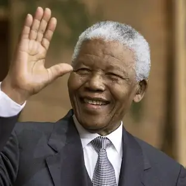

A cultura negra é rica e diversificada, com profundas raízes em diferentes tradições e legados que se desenvolveram ao longo da história. Ela é expressa de várias formas, desde a música e a dança, como o jazz, o samba e o hip-hop, até manifestações literárias, religiosas e artísticas, como o candomblé, o grafite e o movimento afrofuturista.
Na América Latina e no Caribe, por exemplo, culturas africanas se misturaram com tradições indígenas e europeias, gerando expressões culturais únicas. A cultura negra também é marcada pela resistência e resiliência, pois muitos elementos dessa cultura foram preservados e transformados apesar das adversidades, como a escravidão e o racismo. Hoje, celebra-se o orgulho negro através do "black empowerment", da moda afrocentrada, e do fortalecimento da identidade e da herança cultural africana e afrodescendente.
Referências negras

Martin Luther King Jr: Líder dos direitos civis nos Estados Unidos, conhecido por seu ativismo pacífico e por discursos inspiradores, como "I Have a Dream".

Nelson Mandela: Líder sul-africano que lutou contra o apartheid e se tornou o primeiro presidente negro da África do Sul, simbolizando a resistência e a justiça.

Rosa Parks: Ativista dos direitos civis que se tornou um ícone ao se recusar a ceder seu assento em um ônibus segregado, desencadeando um boicote a ônibus em Montgomery.

Malcolm X: Líder dos direitos civis que promovia a autoconfiança e a defesa dos direitos dos afro-americanos, conhecido por sua eloquência e por seu ativismo.

Zumbi dos Palmares: Quilombola e símbolo da resistência à escravidão no Brasil, conhecido por sua luta pela liberdade e pela criação do Quilombo dos Palmares.